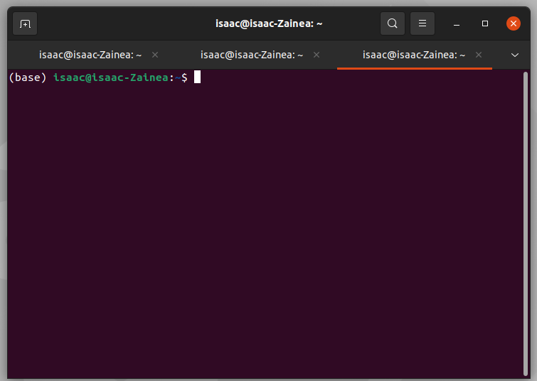
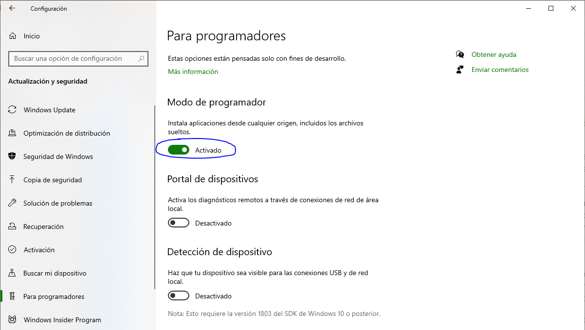
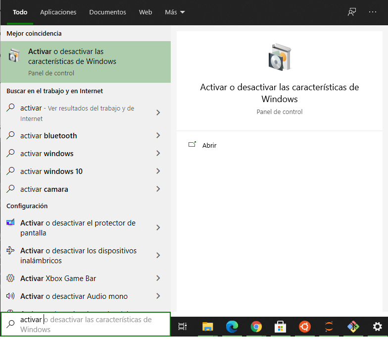
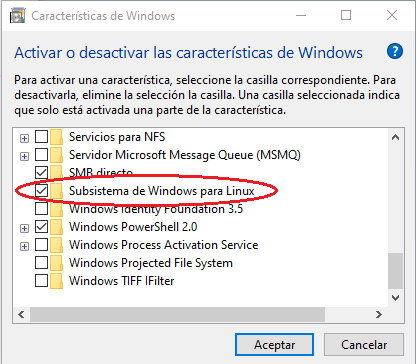
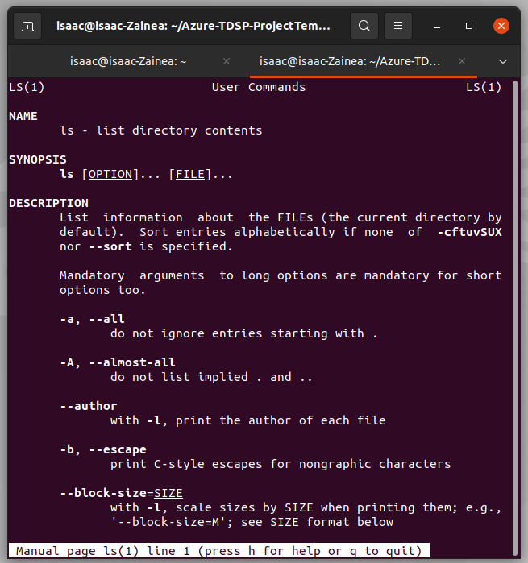
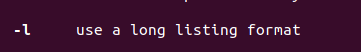

Buscar, borrar y mover archivos en CLI¶
En la sección anterior se explicó que nuestro objetivo fundamental era estudiar los algoritmos y su ejecución en una máquina de computo. Si bien se anunció que Python sería el lenguaje base del curso, hoy estudiaremos la interfáz de la línea de comandos bash. Es bastante útil porque resulta ser una herramienta complementaria a Python o R y permitirá que aprendamos lo suficiente para:
Navegar por las diferentes carpetas de la máquina.
Actualizar repositorios
Hacer despliegues de scripts
Entre otras tareas
Aquí también estudiaremos algunos algoritmos, en particular los que se refieren a consultar archivos, moverlos y borrarlos, pero antes hablemos un poco más de la herramienta y la diferencia con la interfaz gráfica que es la que usualmente utilizamos.
Interactuar con la máquina¶
Actualmente, la manera más sencilla de interacción entre una computadora y su usuario, es mediante una interfaz gráfica de usuario o GUI (Graphical User Inteface). Por ejemplo, para abrir un programa, por lo general das clic en el ícono de éste para así ejecutarlo, o cuando estás en internet, usas el ratón para interactuar con los diferentes elementos dispuestos en las diferentes páginas web. Pero antes de la creación de las GUI, la manera usual para interactuar con la computadora, era mediante una interfaz de línea de comandos o CLI (Command-Line Interface).
Algunas de las ventajas que las interfaces de línea de comandos ofrecen son:
Ejecución de tareas asignando parámetros específicos.
Automatización de tareas por medio de scripts.
Es ideal para la administración de sistemas para toda una empresa.
Terminal¶
En vista de tal importancia, lo primero que haremos es abrir la terminal, esto depende del sistema operativo, en OS X o Linux, abriremos la terminal mientras que, en Windows podremos abrir PowerShell o en su defecto GitBash. Veremos una consola como la siguiente:

De modo que, nuestro primer acercamiento con nuestra CLI, será para aprender a navegar por el sistema de archivos de nuestra computadora:
Para ello escribe el comando pwd (print work directory) y luego pulsa Enter:
pwd
esto nos permitirá ver el directorio actual en el que estamos trabajando. En OS X o en Linux el resultado debería ser como el siguiente:
/usuarios/nombre-de-usuario
En Windows sería:
C:\usuarios\nombre-de-usuario
Como puedes observar hay diferencias, pero son pocas y no afectarán el desarrollo del resto del cuaderno.
Para conocer los archivos y carpetas que hay en el directorio en el cual estamos ubicados, podemos utilizar el comando ls, el cuál listará todos y cada uno de los elementos antes mencionados.
En OS X y en Linux el comando ls arroja la lista únicamente, mientras que, en Windows arroja la lista acompañado de la última vez que se modificó el archivo/directorio, su peso y el tipo (l (link), d (directory), a (archive), r (read-only), h (hidden),
s (system)).
Para tener el mismo manejo en los diferentes sistemas operativos, a la hora de trabajar en la consola, en Windows usaremos el GitBash o instalaremos la consola de Ubuntu en nuestro sistema, de la siguiente manera:
Configuración -> Actualización y Seguridad -> Para programadores
Allí debemos habilitar el Modo de programador y aceptar los cambios:

Luego, en el menú de inicio buscaremos “activar o desactivar las características de Windows”, y allí habilitaremos el Subsistema de Windows para Linux. Nos pedirá reiniciar el computador. 
En la Tienda de Microsoft, buscaremos “Ubuntu”, para descargar la opción que deseemos. 
Abrimos el PowerShell y ejecutamos el comando
bash.De esta manera tendremos la consola de Ubuntu en Windows.
Si estabas en el PowerShell y ahora ejecutas ls verás que la presentación de la lista es diferente, es como lo ven tus compañeros de OS X y Ubuntu.
Para ver todas las opciones de los comandos y la mejor forma de usarlos, empleamos man 'comando', por ejemplo,man ls nos da todas las opciones que tenemos para ver la lista de archivos y carpetas.

para salir de la ayuda oprimimos q
Una función interesante es:

indica que si ejecutamos
ls -l
obtenemos, una lista larga de los archivos en la carpeta, los archivos se verán así:
drwxrwxrwx 1 root root 512 Apr 14 21:22 '3D Objects'
Es la información completa de cada fichero según las siguientes convenciones, En la primera letra tenemos:
|
directorio |
|
archivo |
|
enlace simbólico |
|
socket |
|
tubería |
|
archivo de bloque |
|
archivo de caracteres |
Las tres entradas que siguen indican los permisos del propietario, las tres siguientes, los del grupo y los últimos 3 los permisos de los demás:
|
read 4 |
|
write 2 |
|
execute 1 |
El ejemplo indica que 3D Objects es una carpeta, en la que todos los usuarios tienen todos los permisos.
La siguiente entrada, el número, indica la cantidad de enlaces que tiene el fichero. En el ejemplo el 1.
Las dos entradas que siguen, indican el usuario propietario y el grupo propietario. En el ejemplo el root root.
El valor que sigue, es el tamaño del archivo y su fecha de modificación, en nuestro ejemplo 512 Apr 14 21:22.
Por último el nombre del archivo o directorio.
Ejemplo
drwxr-xr-x 6 juan oficina 4096 nov 8 11:28 Tareas
-rw-r--r-- 1 maría personas 6029504 ago 6 08:13 invitaciones.pdf
-rw-rw-rw- 1 isaac oficina 55595 sep 21 2020 correos.pdf
-rw-r--r-- 1 rippe familia 56292 sep 21 2020 ejercicio_en_casa.pdf
-rwxrwxrwx 1 cris extraños 239 jul 16 2020 cuentas.exe
En esta carpeta encontramos 5 elementos creados por personas distintas, por ejemplo, juan del grupo oficina creo la carpeta Tareas con permisos de lectura, escritura y ejecutable; tiene 6 enlaces y pesa 4096 bytes . maria del grupo personas creo el pdf invitaciones con permisos de escritura solo para ella, los demás tienen permiso de lectura con un peso de 6029504 bytes.
Para crear una nueva carpeta empleamos el comando mkdir (make directory), por ejemplo mkdir prueba. Para comprobar la creación de la carpeta, puedes ejecutar el comando ls y debería aparecer la carpeta que acabamos de crear.
Para cambiar de carpeta, empleamos el comando cd (change directory), por ejemplo, cd prueba. Si deseamos ir a una carpeta diferente empleamos cd ruta-de-la-carpeta. El comando cd tiene opciones adicionales para moverse con facilidad dentro de las carpetas cd ..
nos lleva a la carpeta de “arriba”, mientras que cd -- nos lleva a la carpeta principal.
El siguiente ejercicio nos permitira resolver varias dudas:
Creación de un archivo con consola¶
En el directorio base crearemos una carpeta de prueba y en esta escribiremos un archivo de texto llamado testfile.txt que contendrá la información de ganancias de los tres primeros días del mes:
día ganancia
01 $5000
02 $8000
03 $9000
Apliquemos lo que estudiamos la clase anterior y pensemos en una serie de pasos que permita realizar esa tarea:
Es decir,
Verificamos si estamos en el directorio base con
pwd.Si estamos en el directorio correcto creamos la carpeta prueba ingresando en la consola
mkdir prueba, si no ejecutamoscd ~y llegamos al directorio base.Ingresamos a la carpeta prueba ejecutando
cd prueba.Una vez dentro de nuestra carpeta de prueba, vamos a crear un archivo y lo modificaremos desde la consola, esto lo haremos con el comando
nano testfile.txt.Lo anterior abre un editor de texto plano, en el cual podemos ingresar la siguiente información:
día ganancia
01 $5000
02 $8000
03 $9000
Luego de registrar la información, para guardar el archivo
CTR+Xy luegoEnter. Para verificar la creación del archivo, recuerda usar el comandols, o si quieres ver la carpeta con tu GUI.
Cambiar archivos¶
PERMISOS
Del ejercicio anterior podemos verificar la creación del archivo, y los permisos del mismo (ejecuta ls -l):
-rwxrwxrwx 1 root root 4 Jul 21 11:58 testfile.txt
Es decir, el archivo que creamos tiene todos los permisos, para todos los usuarios. Si queremos modificar esto, empleamos el comando chmod, ten presente su sintáxis: chmod 'a_quien_da_o_quita_permiso''signo''permiso' 'nombre_del_archivo'
A quien da o quita el permiso: u: usuario;g: grupo; o: otros; a: todos.
Signo: + para dar el permiso y - para quitarlo.
Permisos: r, w y x como antes.
chmod o-w testfile.txt
Le quita el permiso de escribir a los demás.
MODIFICAR ARCHIVOS
Para cambiar el nombre de un archivo, el comando mv (move) nos permite realizar esta acción, mv testfile.txt arprueba.txt.
Para hacer una copia del archivo, empleamos el comando cp (copy), por ejemplo, cp arprueba.txt f1.txt
Para ver el contenido de un archivo, empleamos el comando cat, cat f1.txt debe mostrar el contenido que ingresamos en el primer archivo.
En bash (OS X, Linux y Git) podemos concatenar archivos, con el comando anterior y guardar esa información en un tercer archivo, por ejemplo cat arprueba.txt f1.txt > 2.txt.
Para copiar múltiples archivos, el comando cp sirve nuevamente, si queremos copiar todos los archivos del tipo .txt podemos ejecutar la siguiente línea, cp ruta-origen\*.txt ruta-destino
Para bortar un archivo, usamos el comando rm (remove) así: rm 2.txt. Si quieremos borrar la carpeta de prueba completamente, haremos lo siguiente:
cd..
rm prueba
Para limpiar el espacio de trabajo, empleamos el comando clear.
Ahora debes ir al directorio en el cual está alojado este cuaderno:
cd ubicación
Allí, utilizaremos el comando grep, para buscar contenido en un archivo, para este ejemplo, buscaremos en este cuaderno, así:
grep 'para' Consola.ipynb
Esto nos arrojará las líneas en las cuales tenemos escrito la palabra ‘para’ en el archivo.
El comando grep 'Para' Consola.ipynb buscará las ocurrencias de la palabra ‘Para’ en el documento.
Mientras que, el comando grep -i 'para' Consola.ipynb buscará las ocurrencias de la palabra ‘para’, sin importar la coincidencia de las mayúsculas en el documento.
Las otras opciones del comando son:
-c: Muestra el número de líneas que coinciden con la palabra buscada.
-n: Muestra las ocurrencias de la palabra buscada en el documento y las antecede del número de la línea en la que está el documento.
-v: Muestra las líneas que no coinciden con la palabra buscada.
Para buscar un archivo, lo podemos hacer por muchas opciones, dentro de las más comunes encontramos el tipo, el nombre y el tiempo, y el comando que emplearemos con ello es: find. Para buscar por el tipo de fichero tenemos las opciones:
bblock.ccharacter.ddirectory.pllamados pipe (FIFO).farchivos regulares.ssocket.
find -type f Buscará todos los archivos que tengamos en nuestra carpeta.
Para buscar por contenido en el nombre, por ejemplo, buscar todos los cuadernos de python que tengamos en nuestra carpeta, empleamos el comando:
find -name '*.ipynb'
Para buscar los archivos que han sido accedidos durante las últimas \(n\times 24\) horas, empleamos el comando find -atime n, donde \(n\) representa:
+7 = hace más de 7 días.
2 = entre 2 y 3 días.
-2 = dentro de los últimos 2 días.
+1 = hace más de un día.
1 = entre 1 y 2 días.
-1 = dentro del último día.
0 = dentro del último día.
find -atime 0
Para buscar los archivos que han cambiado durante las últimas \(n\times 24\) horas, empleamos el comando find -ctime n, donde \(n\) representa los mismos tiempos de -atime
find -ctime 0
Si queremos ver el historial de nuestra consola de comandos, podemos emplear el comando history.